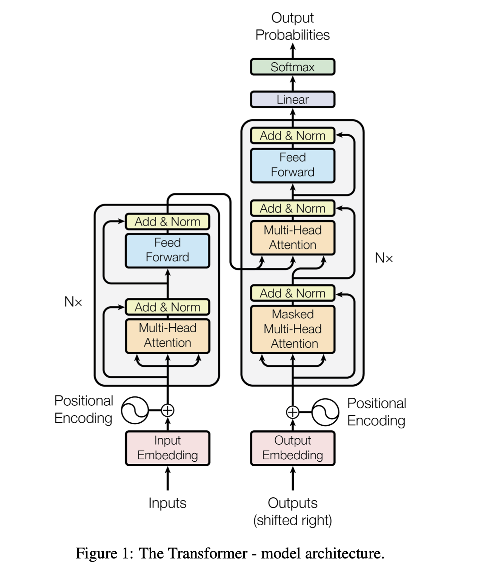
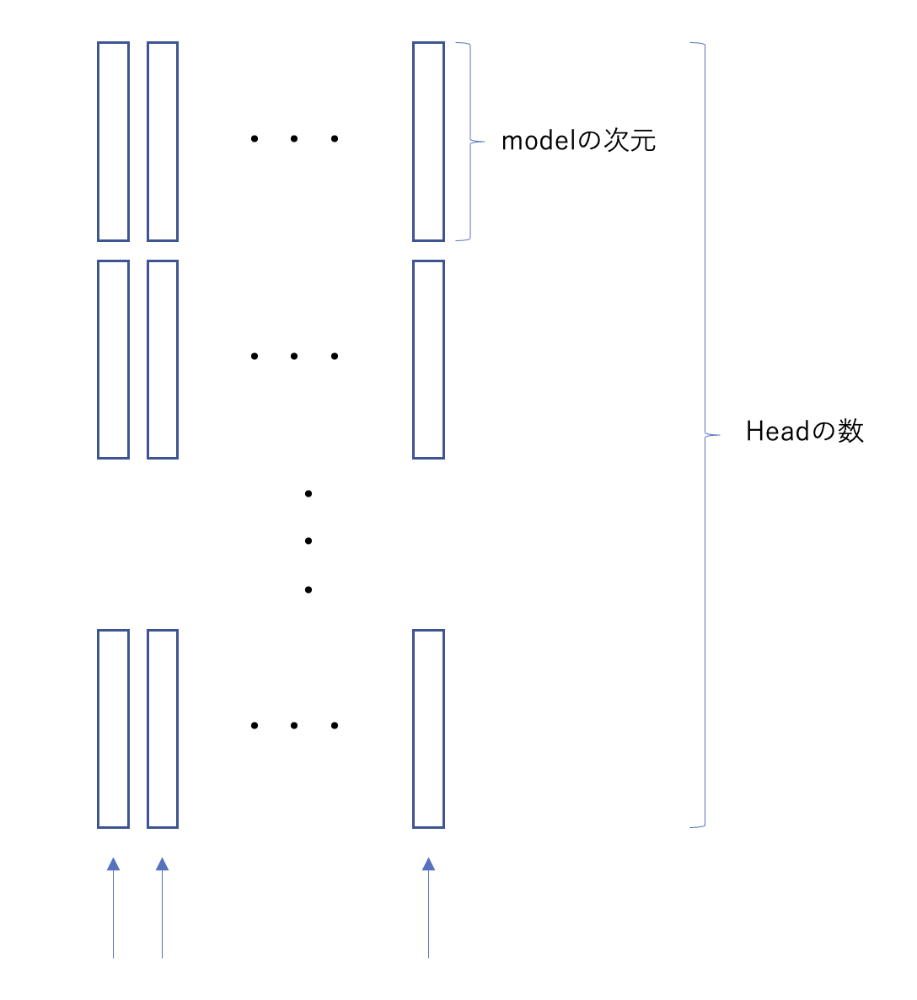

This is all you need to understand "Attention Is All You Need"(多分) 本番
2025年6月19日
概要
この記事では、タイトルの通りTransformerモデルのオリジナルの論文である"Attention Is All You Need"を この記事で完結できるような形で噛み砕いでいくことを目指しますという趣旨で前回の準備記事に引き続き、 論文を実際に頭から読んでいく形で書き下していこうかと思います。MLP(機械学習プロフェッショナルシリーズ)の 「深層学習」(岡谷貴之著)も参考にしました。
"Attention Is All You Need" : https://arxiv.org/abs/1706.03762
前回の記事: This is all you need to understand "Attention Is All You Need"(多分)準備
イントロ / 背景など
AbstractやIntroduction, Backgroundあたりでは、このTransformerというモデルが
Encode-Decoderモデルであるというちょっとしたネタバレとともに、
従来のRNNやCNNベースのモデルよりも機械翻訳タスクにおいて優れた結果を示しましたよということが述べられています。
この機械翻訳タスクの評価はBLEUスコアという指標を用いて行われていて、簡単にいうと訳文と参照文の一致度を図る指標らしく、大きければ大きいほど
いいらしいです。30くらいの値で、人が翻訳したのと区別がつきにくいくらいすごい、という感じなようです。
ちなみにこのタスクとしてメジャーどころは英語ドイツ語の翻訳と、英語フランス語の翻訳あたりっぽいですが、
英語フランス語の翻訳タスクの方がBLEUスコアが比較的高く出やすい、つまりタスクとしては比較的簡単なようです。
英語もドイツ語のゲルマン系の言語なのに、意外ですね。
しかしこの論文の導入部分で最も強調されているのはこのTransformerは翻訳タスクのスコアが高いんだぞというところにはないように読み取れます。
真に強調されているのは、このTransformerモデルは学習にかかる時間が少ないのだというところでしょう。
Transformer以前は機械翻訳といえばLSTM(RNNの一種)で実装されている、というような時代だったらしいのですがその構造上シーケンシャルにしか計算できない、つまり
並列化ができないという欠点を(結構直接的に)ディスっているような入りです。
The Transformer
ここからは本格的なModel Architectureの説明に入っていきます。以下の図は元論文のFigure 1をそのまま引用したものです。
僕を指南してくれている人はこの図は親の顔より見た図だなんて言っていましたので(そんなことがあってたまるか)界隈の人は皆目にする図なのでしょう。 Transformerを説明しているいろんな書籍も結局似通った図をどれも乗っけている印象です。ただそこまでわかりやすいかは。。。と言ったところですが。この論文は この図をはじめにポンと見せて、後から伏線回収していくみたいな構成になっています。論文を自分で読んでみるなら、3.2.3を最初に読んでしまうのがわかりやすいかもしれません。
Attentionの活用
前回記事では重みの元となるものの計算方法は以下のように示していました。
\[ r_i = r(\mathbf{z}_i, q) \]これをsoftmaxにより正規化したものにより重み付けされるのでした。このTransformerモデルでは、"Scaled Dot-Product Attention"と呼ばれる Attentionの計算方法が(上式の関数rの部分で)用いられています。その式を以下に示します。
\[ \text{Attention}(Q, K, V) = \text{softmax}\left(\frac{QK^T}{\sqrt{d_k}}\right)V \]このを改めて日本語で説明すると、\(Q(Query)\)、\(K(Key)\)の(スケールされた)内積を計算しsoftmaxにより正規化したものにより \(V(Value)\)を重み付けしている、ということです。ただし\(\sqrt{d_k}\)は\(Key\)ベクトルの次元数を表しています。 なぜDot積を採用したのか、ディメンションのルートによるスケーリングをするのかは論文内で説明されていますが、簡単に触れると Dot積計算は全部行列計算への置き換えによる並列化が可能である(=高速であるという推しポイント)ことと、スケーリングは Dot積の分散が大きくなりすぎるとsoftmaxの勾配が潰れてしまうものが多くなってしまうからです。(softmaxのグラフを想像してみると、グラフの両端は平坦です) ちなみに行列へのこのsoftmaxの計算は各行に対しての正規化です。
この論文の中では明示的に書かれてはいないのですが、\(Q\), \(K\), \(V\)はそれぞれ以下のように別々の重みベクトルにより入力配列\(X\)から 以下のように変換されています。このような、自分自身同士でその関係性の計算を行うものを"Self-Attention(自己注意)"と呼びます。
\[ Q = XW_Q, \quad K = XW_K, \quad V = XW_V \]ここで\(W_Q\), \(W_K\), \(W_V\)はそれぞれ\(Query\), \(Key\), \(Value\)の重み行列です。この重み行列が学習可能パラメータというわけです。 Attentionの計算そのものは全て行列計算によって行われるのでその部分に学習の余地はないのですが、そこに入力するベクトルに学習可能パラメタをのっけている ということですね。これにより高速な学習が実現されています。
ところで、入力配列\(X\)と言っているものがありますが、前回の記事によればAttentionへの入力は確かトークン"集合"でしたね。 しかし配列というからには位置の情報を持っているはずなわけで。その位置を識別するための仕組みが "Positional Encoding"と呼ばれるものです。先ほどの図にも書かれていますね。
Positional Encoding
この仕組みは日本語で説明すると位置情報をのっけましょう、というものです。仕組み自体はそれほど複雑ではなく、 それぞれの位置をTransformerが識別してくれればあとは基本的に勝手に学習してくれるので方法はなんでもいいといえばなんでもいいようです。 ここでは波のような関数を用いて位置を表現しています。興味があればPEの性能を比べたsurvey論文もあるので探してみては。 このsin、cosを使ったPEは最近はあまり使われていないようです。この部分はアーキテクチャの中では枝葉のような香りがする部分なので 丁寧には触れません。ただ、なかなかこのモデルの大規模な検証はお金がかかるでしょうから、このPEが優秀ですよという 実験がなかなかしにくい現実もあるのかもしれません。実際にこの論文でもこの手法の採択理由はそこまで明確には書かれていません。
Multi-Head Attention
もう一度Attentionのお話に戻ります。改めて図を見てみるとMulti-Head Attentionと書かれていますね。 Multi-Headという仕組み自体は難しくなく、先ほどの\(Q\), \(K\), \(V\)を計算する重み行列 \(W_Q\), \(W_K\), \(W_V\)の初期化の仕方を複数個用意してみましょうというものです。 初期化の仕方によってはAttentionのされ方も多少変わってくるとは思うのでその揺らぎを抑えようという発想だと思います。 論文の最後の性能比較の表を見るとそこまで劇的な変化を生んでいるわけではないのですが、どうせ並列に計算できてしまうので やって損はないよね程度の感覚なのかなと。
上の図は雑な作りですが下に書いてある矢印はAttention計算を通ってきたことを示しています。 上の図のような形でHeadの数だけの重みつきベクトルが計算されていて、それを繋げたもの(Concatenate)に対して以下のような計算を行います。
\[ \text{MultiHead}(Q, K, V) = \text{Concat}(\text{head}_1, \ldots, \text{head}_h)W_O \]ここで\(W_O\)は出力の重み行列です。これも学習可能パラメータですね。このパラメータの学習が進むことで、 いくつか計算されてきたAttentionの中から優秀なやつを選べるようになるイメージです。
アーキテクチャ全体
ここまでで理屈っぽい部分の説明は一通り終わりです。ここからは先ほどの図を解読していくパートになります。 とは言っても、お気持ち的な説明が多くなってしまうと思います。 https://nlp.seas.harvard.edu/2018/04/03/attention.html というサイト(Harvard NLP)も併せて参照してもらえるとお気持ちだけだとモヤモヤする部分は解消されるかもしれません。
FFNと書かれているフィードフォワードネットはReLUと呼ばれるアクティベーション関数を噛ませているもので 一般のニューラルネットにおいてそのような非線形なアクティベーション関数はモデルの表現力を向上するものであると されており、Transformerモデルにおいてもそのような感じで理解して問題ないのではと思っています。 このようなアクティベーション関数は説明しだすと長くなるし僕自身整理しきれていない部分が結構あるので あらためてまとめたいなあ。
それから、EncoderとDecoderの間にある線は"Add & Norm"と書かれていますが、これは Attentionの計算結果に対して残差接続を行い、その後にLayer Normalizationを行うというものです。 残差接続は入力と出力を足し合わせることで、学習の安定化や勾配消失の緩和に寄与するものです。 Layer Normalizationは各層ごとに正規化を行うことで、学習の安定化や収束速度の向上を図るものです。
Encoder スタック
Encoder部分に入力されるトークン集合は、例えば英語 -> ドイツ語の翻訳タスクであれば 英語の文章から計算されるトークン列です。このトークン列(集合)が図のような Attentionの計算をN回通って、その文章の中で注意を向けるべき部分が強調されたベクトルが計算されます。 要するに、英語の文章の文脈が計算され、decoderに渡されるということです。
Decoder スタック
Decoderの部分はまず入力についての説明からです。Decoderに入力されるものは今度はドイツ語なわけですが、 正解となっている訳文がここでは入力になります。 そして"Shifted Right"と書かれているわけですが、これは 「t番目のトークンをt-1番目までを使って予測する」という学習の仕方の肝になっています。 つまり、t-1番目までのトークンから\(Query\)が計算され、Encoderから渡された\(Key\)にお問合せをすることにより、 その結果t番目のドイツ語のVocabulary長の、それぞれにはt番目に来る確率が格納されたベクトルが生成されるということです。 "Masked" Multi-Head Attentionと書かれているのも、t番目を予測するためにt-1番目まで以外を参照してしまうとカンニングなのでそれを防ぐという意味です。 ちなみにこのAttentionの使い方が従来のAttentionの使い方に近くて、self-Attention特別しCross-Attentionと呼ばれるものです。 再喝ですが"訓練時には"t番目予測するのも, t+1番目を予測するのも、他を予測するのも並列に処理できるのが強みであり、 未来の位置には重みをかけないマスクをかけることにより因果関係を崩さずにこれを可能にしています。 "訓練時には"と言ったのは、もちろん機械翻訳タスクでもGPT系の生成タスクでも、生成する際には1トークンずつ生成するしかないからです。
まとめ
ここまでで、全体的な構造の説明も終わりです。うまく言語化しようと思うとなかなか難しい。ちなみにGPT系のモデルは
Decoderモデルと呼ばれ、ここで説明したDecoderモデルと基本的なアイデアは共通しています。
Chat GPTも、あくまで次にきやすい単語を予測しているだけなんだよという話を聞いたことがある人もいるかもしれませんが、
その理屈的なバックグラウンドは先ほどのDecoderスタックの説明の通りです。
GPT系のすごいところはあくまで表現学習なのに(明示的に文法規則などを学習させているわけではないのに)これだけ人間みたいな
文章も出せるし、コーディングもできるしというところです。Transformerモデルの仕組みを知ると、こんな単純だったのかという
驚きと、これだけの単純な仕組みでここまでのことができるのかという驚きがあるのでは。
Chat GPTのすごいところ / Chat GPTって昔は忘れっぽかったよね